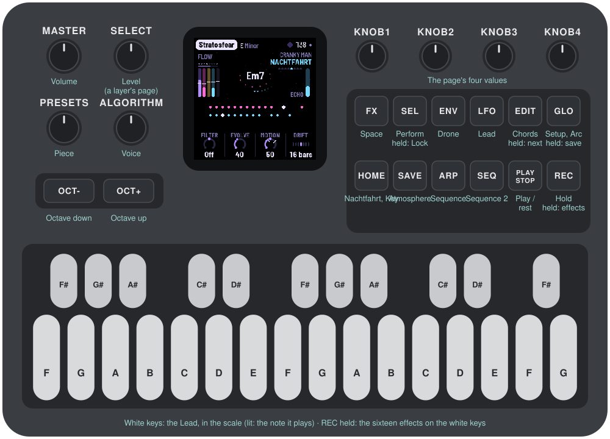
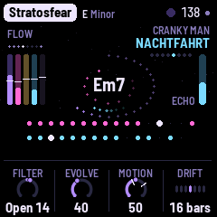
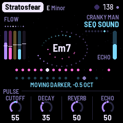
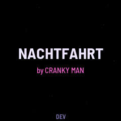
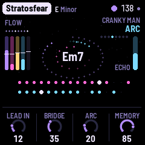
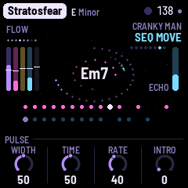
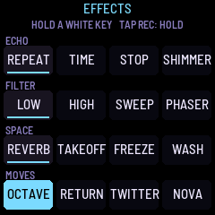
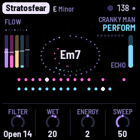

Manual
NACHTFAHRT (called BERLIN while it was built) turns the M-VAVE FM-1 into a generative Berlin School machine, after the 1970s music of Tangerine Dream, Klaus Schulze and Ashra: long, hypnotic pieces built on repeating synthesizer sequences, slowly evolving textures and a lot of space. It plays itself from the moment it's switched on. A sequence of plucked notes runs over a drone, its notes repeated by the echo; a second sequence, often a step shorter, drifts against it; a lead sings long phrases far back in the reverb; wind, surf or the sounds of space pass behind. Each piece opens from the drone, flows, gives the lead its turn, crosses a bridge, and goes on for ever; every layer's filter moves slowly on its own. Listen, and play: let it run, or join in. Play a melody on the white keys and the lead answers it, takes it as its theme and grows new ideas out of it; pick a piece and a key, thin or fill the sequences, open the filter, push the echo, mute and solo the layers.
Source, releases and the web installer: github.com/FartyPants/fm1-nachtfahrt and fartypants.github.io/fm1-nachtfahrt.
NACHTFAHRT is a fork of DUB-1, itself a fork of AMB-1, Charles Vestal's generative ambient firmware for the FM-1.
This is 0.9.2, a test version below 1.0. It runs on the FM-1 (install it from the web installer) and in the browser emulator, from the same code.

1 Install
Try it first in the emulator. It is the same code the FM-1 runs, with sound, in a browser. Build it with web/emu/build.sh, serve build/emu (for example python3 -m http.server --directory build/emu) and open the page. EMULATOR.md has the details.
On the FM-1 (once there is a device build): ./build.sh makes build/amb.fwsc; install it with
python3 tools/fm1_install.py build/amb.fwsc(Python 3 with pip3 install mido python-rtmidi, the FM-1 connected by a USB data cable and switched on.) Don't unplug it while it's writing; when it finishes, the FM-1 restarts into NACHTFAHRT. M-VAVE's own updater, M-UPGRADE, puts the stock firmware back.
Installing other firmware is at your own risk. If the FM-1 ever won't start, see Recovering an FM-1 that won't start.
2 Getting started
NACHTFAHRT starts playing as soon as it's on. A few minutes with it:
- Listen. The first piece, Timewind (D minor, 96), begins with its drone, an organ through a phaser, and the wind. Its sequence is there from the start, behind a closed filter that opens over the first 32 bars (about 80 seconds). Then the sequence runs, its notes repeated by the echo, and later the lead comes in. Nothing is hidden: no layer is turned down behind your back, only filters move. Turn MASTER for the volume.
- Try another piece. Turn PRESETS. Each of the eight has its own key, tempo, voices, sequences and arc. Stratosfear and Sunrain start at once with both sequences; in Wahnfried and Cyborg the Sequence is only a faint heartbeat under the drone.
- Play the lead. Press a white key: the lead plays that step of the scale, from the root up, and its key lights while it sounds. It glides from note to note, deep in the reverb and the echo. Play three notes or more and pause: the lead takes them as its theme, answers you a beat or two later in your rhythm, and brings your notes back later. The black keys stay lit: they play effects while you hold them, dark while held (Rise opens every filter, Close shuts them, and so on: see The effects grid).
- Shape the sequence. Press ARP: the Sequence page. KNOB 1 (Density) thins it out or fills it in; KNOB 3 (Length) makes it shorter or longer. Press ARP again for its sound (Cutoff opens the filter), and again for its Repeats: the notes the echo plays back, as loud as the note itself. One press more: its Move page, how its filter wanders around the Cutoff you set.
- Hold the echo. Tap REC: the echo stops listening and repeats what it holds while the music goes on dry above it. Tap REC again to let it go. Hold REC: the effects grid, sixteen effects on the white keys, each one there while its key is held.
- Perform. Tap SEL: white keys 1–5 mute the five layers, black keys 1–5 solo them, and white keys 7–11, held, sweep the sequence, open or shut the filter, drop both sequences out or push the echo.
- Watch the filters. On a layer's sound page, a small cyan dot on the brightness knob's ring shows where the filter is now, and the screen says how far it has moved ("MOVING DARKER, -1.5 OCT"). Turn the knob: the movement goes on around its new setting.
- Rest. Press PLAY: the music stops and the echo and reverb ring away. PLAY again and the piece opens again from the top.
What you change is kept with the piece. NACHTFAHRT saves it by itself while resting; or hold GLO for half a second.
3 Controls
| Control | What it does |
|---|---|
| MASTER | The volume |
| SELECT | On a layer's pages (the Drone, the Sequence, the Lead, Sequence 2, the Atmosphere, and each one's further pages), the layer's level, 1 a click: a ring in the middle of the screen shows it, and the header says it ("SEQ 64"). On the Nachtfahrt page it turns Energy, PERFORM's (the same value, 1 a click: the screen shows twice), so you can play the keys and push Energy at once: the knobs' rule shows "ENERGY 24" with a bar while you turn, and the header says it. Elsewhere it does nothing (the pages are on their buttons, the tempo on the Key page) |
| PRESETS | The piece (eight) |
| ALGORITHM | On a layer's page, its voice (on the Atmosphere's pages, its character). On the Chords page, the chord walk's character (Home, Wander, Free) |
| OCT− / OCT+ | On the Sequence's, the Lead's and Sequence 2's pages, the layer's octave, a step a press (the Sequence −2 to 2, the Lead and Sequence 2 −2 to 1): the page's Octave knob shows it, the header says it ("SEQ OCTAVE −1"). OCT+ is lit while that octave is above where the piece was loaded, OCT− while it's below. On the other pages they do nothing. Both held 5 s: the update mode |
| KNOB 1–4 | The four values at the bottom of the page. The line above them says what the one turning does |
| White keys | Play the Lead in the piece's scale: the first white key is the root, the next the scale's second step, and so on up. While the Lead sounds a note, that key is lit. Three notes or more and a pause become the Lead's theme (see The layers). On the Pattern page they write the steps instead; in PERFORM they mute, play moves, and the top one makes the Lead forget; with REC held they're the effects |
| Black keys | Eleven effects, each while the key is held. They stay lit, so they stand apart from the Lead's white keys; a key goes dark while its effect is held: Take-off, Supernova, Twitter, Repeat, Shimmer, Freeze, Octave, Return, Rise, Close, Transpose (see The effects grid). In PERFORM, the solos; on the Pattern page, the accents |
| PLAY | Play / rest |
| REC | A tap: hold (the echo and the cloud repeat what they hold). Held: the effects grid |
| EDIT | A tap: the Chords page. Held: the next chord, on the next bar. Held on (1.5 s): new chords |
| SEL | A tap: PERFORM. Held: Lock (the sequences stop varying, each pass as the last, until SEL is held again; not saved) |
| HOME | The Nachtfahrt page; again, the Key page |
| ENV | The Drone; again, its sound page; again, its Move page |
| ARP | The Sequence; again, its sound page; again, its Repeats; again, its Move page |
| LFO | The Lead; again, its sound page; again, its Move page |
| SEQ | Sequence 2; again, its sound page; again, the Pattern page; again, its Move page |
| SAVE | The Atmosphere; again, its sound page; again, its Move page |
| FX | The Space page; again, the Echo page |
| GLO | The Setup page; again, the Arc page (Lead in, Bridge, Arc, Memory). Held half a second: save. Held on (1.5 s): the piece back to its recipe |
Nudges. Hold a layer's button (ENV, ARP, LFO, SEQ) for half a second: its sound takes a small step somewhere new (its filter, envelope, tone or vibrato, never its sends or octave). Hold it on for 1.5 s: a shake, a new voice and bigger steps (a shake picks from the voices before the FM voices: those are on ALGORITHM). HOME held on shakes every layer at once. Each step is pulled back towards the piece's recipe, so nudges explore around the piece's sound rather than wander off. With Evolve over 40, NACHTFAHRT nudges a layer by itself now and then.
A long press says what it did on a card in the middle of the screen.
4 The screen

The screen is black, with a few dim stars drifting slowly left while the music plays.
- Top: the piece, its key and mode, the tempo (EXT under MIDI clock). A dot means unsaved changes.
- Top left: the section of the arc (EMERGE, FLOW, SOLO, BRIDGE), with hold and lock after it in red while they're on, and under it the eight bars of the phrase.
- Top right: "CRANKY MAN", small, and under it the page's name (with SOLO beside it while a solo is on).
- Left: five meters, one for each layer in its own colour: the Drone (violet), the Sequence (pink), the Lead (gold), Sequence 2 (cyan), the Atmosphere (grey). Each rises with what its layer is playing. Across each one, a white tick shows where that layer's filter has moved to: above the middle, brighter; below, darker; six pixels for each octave.
- Middle: the chord the Drone plays, its name in white with nothing behind it. Each note of the Sequence sends a pink dot round it on the inner orbit, each note of Sequence 2 a cyan one on the outer orbit, fading over a few seconds; the echo's repeats are smaller, dimmer dots with a short trail. Hold turns the chord and the dots red and says "hold". A new chord comes in big and cyan for a moment.
- The chord's ring: round the orbits, a ring of violet dots shows how far the chord has gone: it grows clockwise from 12 o'clock, bar by bar, and is full when the chord changes, then starts again from 12. In the chord's last bar it is brighter, so you can play a phrase into the change. While held (REC) it stays as it is, in red; with Drift at Hold (the chord never changes) there is no ring.
- Right: the echo's level (ECHO).
- A ring in the middle: while you turn SELECT on a layer's page, its level as a big knob in its colour, the number inside and the layer's name under it (grey and MUTED if it's muted); it fades a moment after.
- Below: two lanes, the Sequence (pink) and Sequence 2 (cyan), each as long as its sequence: a big dot for each step that plays, a speck for a rest, and a white cursor on the step playing now. Two sequences of different lengths drift apart and meet again, and you can see them do it. On a layer's page, the other lane is greyed.
- Bottom: the page's four knobs and their values. While a knob turns, the rule above them says what it does; while SELECT turns Energy on the Nachtfahrt page, it shows "ENERGY", its value and a bar from the middle.
The filter motion, shown. On a layer's sound page (the one with its brightness knob), a small cyan dot sits on that knob's ring where the filter really is now: the knob's own pointer stays where you set it. Under the lanes the screen says how far it has moved: "MOVING DARKER, -1.5 OCT" or "MOVING BRIGHTER, +0.8 OCT" (not shown while it is within a tenth of an octave of the knob). The screen reader says it too ("Cutoff moving darker, about -1 octave").

The launch screen. Every time the FM-1 starts, NACHTFAHRT comes up large on black among a few stars, with "by CRANKY MAN" under it and the version at the foot, for a moment. The music starts as always, under it.

5 The layers
The Sequence (ARP; MIDI channel 2) is the heart. Up to 16 steps in the scale, eighths or sixteenths, played on a plucked voice: 2600 (a saw), Moog (two saws a little apart), Synthi (a square), Pulse (a narrow pulse), Glass (an FM bell), each through two low-passes, the second resonant, swept down by a short envelope; or Pluck, a plucked string (Karplus-Strong: a burst of noise ringing round a delay line a period long), whose Cutoff is how bright the pluck is and Decay how long the string rings (in the highest octaves, from about C7, a string rings short whatever Decay is set to, as a real one does). After Pluck come the FM voices (fm1_open's recipes: three pairs of sines, each one bending its partner's pitch, as a DX7 does): FM Keys, FM Bell, FM EP (an electric piano), FM Clav, FM Guitar, FMMarimba, FM Vibes, FM Metal, FM Bass and FM Sub; Decay is how long a note lasts and Cutoff how bright, as for the others. The root step is accented and the others quieter (Accent, on the Pattern page). Density decides how many of the steps sound, the least important dropping out first. Now and then (Evolve, Motion) a step changes, a note moves, an octave jumps, the sequence comes round early; it follows the Drone's chord (Transpose, on the Key page). Its cutoff wanders slowly over minutes, around the Cutoff you set (its Move page, below; its Width is the Sweep, also on PERFORM).
The Repeats (ARP, third page) are what makes it Berlin: each note is played again at one of the echo's times, by default a dotted eighth (Repeat A, as loud as the note: 100), and a second time (Repeat B) into the rests only. They are real notes, so they go through the filter and the echo like the rest, and the Sequences are sent into the echo generously. The echo's own time is by default a dotted quarter (1/4.), so Repeat A, a dotted eighth, doesn't land on the echo's first repeat.
Sequence 2 (SEQ; channel 4) is a second line, by default an octave down and a step shorter (7 against 8), so the two drift apart and come back together. It has the same voices and Sub (a sine and its octave below); on ALGORITHM, Pluck comes after Sub, and the FM voices after Pluck, as on the Sequence. Chance thins it at random. Its Intro (Move page) opens its filter, from closed, over that many bars: in Rubycon it comes out of the drone after the Sequence. Motion changes its steps and octave jumps but never its length: an 8 against a 7 stays 8 against 7. And with Motion, at a change of section, Sequence 2 may move an octave up or down from where its Octave knob is set (at the range's ends, the other way), and back at the next change of section; never more than one octave away (the chance is Motion's: at 100 every time, at 0 never). Its page's Octave knob shows where it is, and OCT+ or OCT− lights. Turn its Octave knob or press OCT− / OCT+ on its page and what you set is its octave again, the move gone; what's saved is always the octave you set.
The Drone (ENV; channel 1) holds the chord on two banks of five voices: the chord's four notes and the root an octave under (the Pedal). Voices: Organ, Strings (through an ensemble), Horn (a saw through two fixed formants), Saws, Glass, Choir. The Choir sings a vowel: each note is two voices a little apart, through three formants (as a voice's mouth shapes it) and the Strings' ensemble. The vowel moves with the Drone's brightness: Colour chooses it ('oo' at −25, 'ah' at 0, 'ee' at +25, 'oh' and 'eh' between; past ±25 it only gets darker or brighter), and its Move page moves it, slowly, as it moves the other voices' filter (two vowels for each octave the filter moves; the Intro opens it from 'oo'). Its Reso makes the formants sharper or softer. A phaser sweeps it slowly (Phaser). The chord walks from degree to degree every Drift bars (the Nachtfahrt page), or follows the eight slots of the Chords page.
The Lead (LFO; channel 3) is one voice, gliding: Odyssey, Mini, Flute, Theremin, Synthi, and three FM voices (fm1_open's recipes): FM Lead, FM Reed and FM Brass. It plays in pairs: a call that ends open, then, a beat or two later, its answer, the same rhythm ending on the chord's root or fifth, held longer. It remembers its motifs: it plays one for a few pairs, then keeps it, varies it a little (a note moved, a new tail, its first half twice, slower) or finds a new one. How much it keeps is Memory (the Arc page): the chance that after those few pairs it keeps the motif; at 100 it holds on to an idea, at 0 it changes it nearly every pair. Its first idea is the piece's theme, and the theme comes back when Solo begins, after the arc's rise peaks, when a Bridge begins, and when it hasn't been heard for a while (with Memory under 20 the theme it made itself doesn't come back). Towards the arc's peak it plays more notes, shorter and higher, and sometimes builds a longer phrase that ends in a quick run, mostly downwards, to a close. Between pairs it breathes for bars (Phrases: how often). Its vibrato comes in late. By default its reverb and echo are at 90, so it sings far away. It may start Lead in bars after the piece starts (the Arc page), plays now and then in Flow and fully in Solo. Its filter's movement is kept gentle: never more than three quarters of an octave either way.
The white keys play the Lead too, and write its theme. Play three notes or more (the last four bars of what you play are kept, at most sixteen notes and rests) and pause for two beats. What you played was the call, and the Lead answers it a beat or two later: your rhythm, its own notes but close to yours (it picks up a step or two from your last note, and on the strong beats it lands on a chord note next to yours), ending on the chord. It doesn't play your notes back to you. It does this in any part of the piece, Emerge too, even before Lead in: you asked by playing. From then on your notes are the piece's theme: they come back whole where the theme does, over whatever chord is playing, varied a little at a time like any of its ideas, even when the Lead otherwise keeps little (a theme you played is never thrown away). One or two notes are just played, nothing is kept; notes played while the Lead is muted aren't kept either. Your notes sound as you play them; the Lead counts them on the grid, to the nearest sixteenth. Stopping the music, or PANIC, forgets notes you are in the middle of playing; PANIC also drops an answer not yet begun (a theme already taken stays: the Lead plays it next, in its own time). A new piece starts with new ideas, and so does PERFORM's Forget (the top key).
After your theme, the Lead's own ideas grow out of it. The next one, a bar or two after the answer, starts from it: its first notes carried on in a new way, or its first notes and then the same again from another note of the chord, or its shape turned upside down. The ones after stray further, even when Memory would keep an idea: your notes backwards, its last notes carried on, then only its rhythm with new notes. After a while its ideas are its own again: about 45 seconds at Memory 0, a minute and a half at 50, two and a half minutes at 100. Your theme itself keeps coming back where the theme does, and a new figure on the keys starts it all again from that one.
The Atmosphere (SAVE) is a background: None, Wind (a breath of soft, pink noise through a narrow band, swept slowly, louder as it climbs: gusts), Surf (waves of dark, deep noise, each brighter as it breaks), Space (chirps and bursts, far away), Air, Tape (a crackle ringing on the chord, DUB-1's), Drops (soft drops, each a short ring at its own pitch, over a quiet hush; it was called Rain), Hail (deep, heavy thuds over a muffled rain), or Rain (rain outside: brighter, sharper drops over its wash). Wind and Surf are dark, their top end soft (the FM-1's speaker is bright). Hail and Rain cost the FM-1 more than the others: in a heavy piece they can make it thin its sound now and then.
Its knobs keep their jobs whatever it is: Density, how busy (on Wind, how often its band turns; on Drops, Hail and Rain, how hard it falls); Drift, how quickly it changes (Wind's band, Surf's waves, the showers coming and going); Colour, darker or brighter (where Wind's band wanders, the drops' pitch or brightness); Ring, how much it rings (how narrow Wind's band, how long each drop); Air, the hiss under it; Width, Reverb and Echo as everywhere.
6 The arc and the filter motion
A piece is not a loop: it goes through sections, chosen as it plays. But it never ends by itself: once it has opened, it goes on through flow, solo and bridge for ever, until you stop it or change the piece.
The filter motion
Nothing in NACHTFAHRT fades behind your back. A layer whose level is up and which isn't muted always plays at its level (your mutes, your solos and PERFORM's Drop are the only ways a layer goes quiet, and they are shown). What moves is each layer's brightness: the Drone's Colour, the Sequence's and Sequence 2's Cutoff, the Lead's Tone and the Atmosphere's Colour. NACHTFAHRT moves each one's filter by an offset in octaves from the knob, never to a value of its own. The knob keeps the value you gave it; turn it and the whole movement moves with it at once.
Each layer has a Move page: ENV (the Drone), LFO (the Lead) or SAVE (the Atmosphere) pressed a third time; ARP (the Sequence) or SEQ (Sequence 2) a fourth time. Its four knobs are the same on every layer:
| Knob | What it does |
|---|---|
| Width | How far the filter may move, either way: up to 2 octaves at 100 (the Lead: three quarters of an octave). 0: no wandering. On the Sequence's page this is the Sweep knob |
| Time | How long one move takes to arrive, eased: from about a bar to 32 bars (the Lead never under 4) |
| Rate | How often a new move starts: 100, about every 2 bars; 50, about every 11; lower, rarer; 0, never (the filter rests where its last move left it) |
| Intro | 0–64 bars. When the piece starts, the filter begins closed and opens over this many bars, slowly at first. 0: open from the start |
Each layer picks its own moves at random, so the layers diverge and converge: one getting darker while another brightens. A new target near the knob's setting is a little likelier than one at the edge, so the music comes back to the sound you set. The defaults are Width 20, Time 50, Rate 30, Intro 0; each piece sets its own (see The pieces). The clock is the transport's bars, so the motion stands still while the music rests, and follows an external MIDI clock. The Atmosphere's colour is kept within about an octave either way, whatever its Width.
The Intro happens once, when the piece starts (PLAY, or the piece changed or set back to its recipe). Turned up while the piece plays, it waits for the next start (an open filter is never shut by it); turned down, the filter opens sooner. A filter at the start of its Intro is closed, so its layer is quiet for a while: the meter's tick sits low, the knob's dot sits at the bottom, and the section reads EMERGE.
The sections
- Emerge: the opening, for as long as the longest Intro is still opening. With every Intro at 0, a piece starts in Flow. It happens once and doesn't come back.
- Flow: the sequences; the Lead now and then.
- Solo: the Lead in full.
- Bridge: the sequences keep playing, but each layer's filter takes an extra move of its own, darker or brighter at random, of up to Bridge's amount (the Arc page: up to 3 octaves at 100; the Lead's a third of that), eased in over the bridge's first four bars and out again over its last four. The layers part, and come together again at the end. Bridge 0: no extra move, and the section is like Flow. A swell of echo in the two bars before Flow returns.
Sections last 16 to 64 bars; Motion (the Nachtfahrt page) makes them shorter, and at 0 the piece stays in Flow. At a change of section, with Motion, Sequence 2 may move an octave away for that section (see Sequence 2).
The master actions move by themselves
With Motion, PERFORM's Filter, Wet and Energy move on their own, slowly, and their knobs show it (the screen reader doesn't announce it):
- Filter: a slow swing between Shut 30 and Open 30, 64 bars round, opening first.
- Wet: from 0 up to +50 and back, 48 bars round.
- Energy: follows the arc: 0 at the start of the Sequence's slow rise, +50 at its peak, back down after (Arc 0: it stays at 0).
Motion sets how far: at 100 the full ranges above, at 50 half of them, at 0 none of them moves. Turn one of the three knobs (or SELECT on the Nachtfahrt page, for Energy) and your value holds until the next change of section; then the motion takes over again from your value, gliding back over eight bars, without a jump. Lock holds all three where they are. A sequence whose level is 0 (Cyborg's Sequence 2) stays silent whatever Energy does. A new piece, or PLAY from the top, starts the motion from its beginning.
The Arc page
GLO twice. Lead in (0–64 bars): how long after the piece starts the Lead may play. Bridge (0–100): see above. Arc (0–100): the length of the Sequence's slow rise: its filter climbs towards a peak (four fifths of the way through) and settles, then does it again, for ever (0: no rise; 1–100: about 130 to 770 bars). Memory (0–100): how much the Lead keeps its ideas: the chance that, after a few pairs on one motif, it keeps it rather than varying it or finding a new one (see The layers). Each piece sets its own (see The pieces).

The Sequence's offset is the sum of its wander, its Intro, the bridge's move and this rise; the black keys' Rise and Close (The effects grid) are one more term. The total is kept inside each filter's usable range.
7 The pieces
| # | Piece | After | Key, tempo | Sequence | Drone, Lead | Atmosphere | Moves |
|---|---|---|---|---|---|---|---|
| 1 | Timewind | Schulze, Bayreuth Return | D minor, 96 | Two: 2600, 16 steps in 16ths, Repeat B; Sequence 2 Moog, 15 steps, an octave down; Reverb 50 | Organ + phaser, Odyssey | Wind | A slow opening: the Sequence's Intro is 32 bars. A gentle wander on every layer; Bridge 45 |
| 2 | Wahnfried | Schulze, Wahnfried 1883 | B♭ Dorian, 80 | A faint heartbeat: the Sequence at 30 (opening over 16 bars), Sequence 2 at 50, an octave down | Strings at 95, the roots walking free; Theremin | None | The Drone's filter is the main movement: Width 45, with long moves; Bridge 30 |
| 3 | Phaedra | Tangerine Dream, Phaedra | D minor, 149 | Moog bass 16, a Moog line of 15 over it, much sweep | Choir (level 70), Flute | Tape | The Sequence opens over 16 bars (Sweep 85, wide); Sequence 2 straight in, sweeping often |
| 4 | Rubycon | Tangerine Dream, Rubycon | F minor, 144 | 2600 8, two octaves down, and Sub 7 at octave 0, dark | Organ, low and dark, Synthi | None | The Sequence opens over 16 bars, then Sequence 2 over 32: it comes out of the drone after it; Bridge 50 |
| 5 | Stratosfear | Tangerine Dream, Stratosfear | E minor, 138 | Pulse 16 and 2600 15, together from the start | Strings, Mini forward | None | Straight in, no Intros; both sequences' filters move often |
| 6 | Sunrain | Ashra, New Age of Earth | D major, 130 | Pulse 8, Glass 7, both repeats at 100 | Strings, Odyssey | Surf | Straight in, no Intros; Sequence 2 and the Atmosphere wander a little wider |
| 7 | Mirage | Schulze, Mirage | F♯ minor, 95 | Glass 12 and 11, sparse, in 16ths | Glass + deep phaser, Theremin; a long reverb | Space | A slow opening: the Sequence's Intro 16 bars, Sequence 2's 24; the Atmosphere moves widest |
| 8 | Cyborg | Schulze, Cyborg | C Phrygian, 70 | One, quiet (level 20): 2600, 8 steps in 8ths; no Sequence 2 | Organ, deep and beating; Theremin, low and up front (level 70) | None | The Drone's filter moves widely and slowly (Width 50, Time 70) |
| 9 | Ryokuu | after early-summer rain (緑雨, "green rain") (Cranky Man's) | B♭ Dorian, 80 | Jean-Michel Jarre's arps: 2600 an octave down, dark (Cutoff 30); Sequence 2 on Sub two octaves down, open (Cutoff 90) | Strings, darker (Colour −30), the royal road (A♭'s IV△7–V7–iii7–vi7 in B♭ Dorian's notes, looping); Theremin two octaves down, gliding (70): almost singing | Rain (6; Colour 20, Ring 70) | Wahnfried's melody and moves |
In every piece the Lead's Width is low: it stays gentle. Its Memory (the Arc page): Timewind 55, Wahnfried 40, Phaedra 75, Rubycon 45, Stratosfear 85, Sunrain 60, Mirage 50, Cyborg 35, Ryokuu 40 (Stratosfear's and Phaedra's Leads hold on to their ideas, Cyborg's and Wahnfried's wander). The names are working titles. The keys and tempos are starting points from music analysis sites, to be tuned by ear; fast readings such as Phaedra's 149 and Rubycon's 144 may be double the felt tempo (they run in eighths, which feel like sixteenths at half the speed). NACHTFAHRT is not connected with any of these artists.
8 The pages


Each layer's pages share a layout: its main page has how much (K1), its octave (K2) and two of its own; its sound page has brightness, envelope, Reverb and Echo (the layer's sends); its Move page has Width, Time, Rate and Intro (see The arc and the filter motion).
HOME: Nachtfahrt: Filter (on everything, Off in the middle: turned down it shuts, a low-pass; turned up it opens, a resonant high-pass), Evolve (how often the sequences change a step), Motion (how much they change, and how quickly the sections move; 0: Flow for ever), Drift (bars per chord: 2–64, or Hold).
HOME again: Key: Tempo (60–160), Root, Mode (Minor, Major, Dorian, Mixolydian, Pentatonic minor and major, Phrygian, Lydian: the most common first), Transpose: how the sequences follow the chord. Parallel moves the whole shape by the chord's interval, as an analog sequencer transposed by a keyboard (it may leave the scale), Diatonic moves it by scale steps (it stays in the scale) and Bed doesn't move it (the chord changes under it).
ENV: Drone: Pedal (the root an octave under), Reso (on Choir: how sharp its formants are, too), Phaser, Attack. Its sound: Colour (darker or brighter, and the voices' detune; on Choir its vowel), Release, Reverb, Echo. Its Move page: Width, Time, Rate, Intro (on Choir they move its vowel).
ARP: Sequence: Density, Octave, Length (3–16), Grid (8ths or 16ths). Its sound: Cutoff, Decay, Reverb, Echo. Repeats: Repeat A, A time, Repeat B, B time (1/8, dotted 1/8, 1/4, dotted 1/4, 1/2, a bar). Its Move page (a fourth press): Width (this is Sweep), Time, Rate, Intro.
LFO: Lead: Phrases, Octave (−2 to +1), Glide (1–150 ms), Vibrato. Its sound: Tone, Attack, Reverb, Echo. Its Move page: Width, Time, Rate, Intro (the tone's wander is kept gentle).
SEQ: Sequence 2: Chance, Octave, Length, Level. Its sound: Cutoff, Decay, Reverb, Echo. SEQ a third time: Pattern: write the sequences yourself. KNOB 1 picks a lane: Steps (which of the Sequence's steps play), Steps 2 (Sequence 2's), Octaves and Octaves 2 (which steps jump an octave), Skips (steps passed over). The white keys are its sixteen steps. KNOB 2 is the Accent, KNOB 3 the lane's chance, KNOB 4 Play: Auto (generated) or Pattern (as written). SEQ a fourth time: its Move page (Width, Time, Rate, Intro).
SAVE: Atmosphere: Density, Width, Drift, Air; ALGORITHM its character. Its sound: Colour, Ring, Reverb, Echo. Its Move page: Width, Time, Rate, Intro.
FX: Space: Echo (how much of everything goes into it), Echo time (a dotted quarter by default), Feedback (the tail, in seconds), Reverb. The echo is a tape echo that ping-pongs left and right. FX again: Echo: Blur, Tone, Width, Size (the plate).
GLO: Setup: Tune (±50 cents), MIDI out, Lights, Save. GLO again: Arc: Lead in, Bridge, Arc, Memory (see The arc and the filter motion).
EDIT: Chords: eight slots. In Endless the walk writes them and slot 1 plays; on each change they move up a slot. A key writes a slot's root, KNOB 2 its kind, KNOB 3 its type, KNOB 4 Play: Endless or Loop (the slots in turn, nothing new). ALGORITHM sets the walk's character: Home, Wander, Free.
9 The effects grid

Hold REC: the grid fills the screen, four rows of four, one effect on each white key. An effect lasts while its key is held; several can be held together. Let go of REC and the keys still held keep theirs until they're let go.
| Echo | Repeat: the Sequence thrown into the echo | Time: the echo's time doubled | Tape stop: the tape slowing to a quarter | Shimmer: the plate climbing, its tail an octave up and again (see below) |
| Filter | Low-pass: down to 350 Hz | High-pass: up to 1.3 kHz | Sweep: the Sequence's filter swept two octaves each way | Phaser: a deep phaser on all the music |
| Space | Reverb: the dry music into the plate | Take-off: a burst of noise falling into the echo | Freeze: the cloud holds what it has | Wash: everything into the echo and the plate, the dry down |
| Moves | Octave: the Sequence an octave up | Return: both sequences round their first four steps | Twitter: a burst of bleeps into the echo | Supernova: the echo's feedback past full |
Shimmer is a shimmer reverb, played. While it is held, the plate's tail is pitched an octave up and fed back into the plate, so each time round it climbs another octave, darker as it climbs (the FM-1's speaker is bright) and fading out after about two octaves. Some of the music goes into the plate with it, so it is heard in every piece (a few dB louder while held). Let go and the climbing stops; what is already in the plate dies away with its tail, not cut off.
The black keys
In normal playing the black keys play effects too, each while it is held and lit, so one hand can play the Lead on the white keys and the other the effects, with no REC needed. Left to right, the eleven black keys are:
| Black key | Effect |
|---|---|
| 1 | Take-off (the grid's) |
| 2 | Supernova (the grid's) |
| 3 | Twitter (the grid's) |
| 4 | Repeat (the grid's: the Sequence thrown into the echo) |
| 5 | Shimmer (the grid's: the plate climbing in octaves) |
| 6 | Freeze (the grid's: the cloud holds) |
| 7 | Octave (the grid's: the Sequence an octave up) |
| 8 | Return (the grid's: both sequences round their first four steps) |
| 9 | Rise: every layer's filter opens together, up to 2 octaves, easing in over about a second and back over about three when you let go |
| 10 | Close: every layer's filter closes together, down 4 octaves, eased the same way: a breakdown played by hand |
| 11 | Transpose: both sequences three scale steps up (a fourth, in a seven-note scale) while held; the Drone's chord and the Lead stay |
The first eight are the grid's own effects, not copies: a black key and the grid's white key for the same effect are one effect, on while either is held. Rise and Close are offsets from the knobs, like the filter motion's, added to it (the Lead's stays within its three quarters of an octave); they never set a filter to a value of their own. In PERFORM the black keys solo, and on the Pattern page they accent steps. The screen reader names the effect as each key goes down.
10 PERFORM

Tap SEL. The knobs become the master actions: Filter (as on the Nachtfahrt page), Wet (the whole music dry, or drowned in the echo: every layer's echo send, the Drone's, both Sequences', the Lead's and the Atmosphere's), Energy (sparser or busier: the Sequence's Density, levels, Sweep, note length, Cutoff, and Repeat B, the second repeat), and Sweep (how far the Sequence's cutoff wanders on its own: the same as its Width on the Move page, the piece's). With Motion, Filter, Wet and Energy also move by themselves, the knobs showing where they are; a turn of yours holds until the next section (The master actions move by themselves). The keys that do something are lit:
- White 1–5: the Drone, the Sequence, the Lead, Sequence 2, the Atmosphere, muted and back (their levels kept). A mute is complete: a muted Lead lets go of its note at once (and plays nothing from the white keys), a muted Drone is silent, and neither sends MIDI notes while muted.
- Black 1–5: the same, soloed (more than one: they play together). (In normal playing, the black keys play effects instead: The black keys.)
- White 6, held: the knobs become the levels (Drone, Seq, Lead, Seq 2).
- White 7–11, held: Sweep (the Sequence's filter swept), Open, Shut (the filter pushed), Drop (both sequences out), Echo (the echo pushed, everything in and feeding back).
- The top key (G), apart from the rest: Forget. A press and the Lead forgets everything it remembers: its ideas, its theme (yours too, if you played one), a figure you were in the middle of playing, and an answer it was about to give. The note it's playing stops; it thinks of a new theme and new ideas, as at the start of a piece, and plays again within a few bars. Nothing else changes (no setting, nothing saved). The key is lit, and dark while you hold it.
SEL again, or a page's button, leaves.
11 MIDI
MIDI comes in over USB and the TRS jack, and goes out over USB.
- Out (on by default; a muted layer sends nothing): the Drone on channel 1, the Sequence (and its repeats) on 2, the Lead on 3, Sequence 2 on 4, and, on its own tempo, clock with start and stop.
- In, clock: the sequences follow MIDI clock, and start, continue and stop start, continue and stop the music. The screen shows EXT for the tempo; when the clock stops, NACHTFAHRT goes back to its own.
- In, channel 1: a note adds or removes its note from the scale ("ADDED", "REMOVED"; the root stays, three notes at least). The keys no longer do this; they play the Lead.
Screen reader
NACHTFAHRT can tell the FM-1 Screen Reader what its screen shows, over USB: the page and its knobs, a knob's value as it turns, the piece, its key and tempo, the chord as it moves, the effects as they're held, and every message. Press W in the reader to hear the whole screen again, with the section of the arc and its bar, and how far a filter has moved. The FM-1 says nothing until the page connects.
12 Saving
NACHTFAHRT keeps all nine pieces in the FM-1's memory, each as you left it, with Tune, MIDI out and Lights.
- By itself: a few seconds after a change, while resting (writing to the memory interrupts the sound for a moment, so it never happens while the music plays). A dot at the top means unsaved changes.
- GLO held half a second: saves now ("SAVED").
- Setup's KNOB 4 (Save): shows Save while there are unsaved changes, Saved once there aren't; a turn saves.
- GLO held on (1.5 s): the piece back to its recipe ("RESET"); not saved until the next save.
Lock and PERFORM's Filter, Wet and Energy aren't saved; a piece change (or GLO's reset) returns the three to 0, so none of one piece's push carries into the next. Projects saved by DUB-1, AMB-1 or an earlier NACHTFAHRT build aren't read: NACHTFAHRT starts with its eight recipes.
13 Troubleshooting
Update mode: hold OCT− and OCT+ together for five seconds. A countdown appears; let go before it ends to cancel.
Calibration: if a button or knob does the wrong thing, hold OCT− and OCT+ while you switch the FM-1 on. The screen asks you to press each button and turn each knob in turn.
After a crash: NACHTFAHRT shows a red CRASH screen and restarts by itself. The next start shows RESTARTED AFTER A CRASH and an address (PC ...) for a moment; if you report the problem, include it and what you were doing.
Safe mode: if NACHTFAHRT crashes twice in a row while starting, it starts in SAFE MODE: no sound, but USB works, so you can reinstall with tools/fm1_install.py or put the stock firmware back with M-UPGRADE. Press PLAY to try starting NACHTFAHRT normally. If even safe mode fails twice, the FM-1 drops into the chip's own update mode, and only the rescue below can reach it.
Recovering an FM-1 that won't start
An FM-1 in the chip's own update mode shows a blank screen, and neither the installer nor M-VAVE's updater can see it. On a Mac, in a checkout of the source, run:
bash tools/fm1_rescue.shInstall the command line developer tools if asked, type your Mac password if asked, then plug the FM-1 in and switch it on when the script says it's waiting. It checks the chip, saves a backup of the FM-1's memory in fm1-rescue in your home folder, and asks before it writes. Type yes; don't unplug anything until it says it's restarting the FM-1, which then starts into its original firmware. The script downloads its rescue tool from X0X's repository, M-VAVE's FM-1 V15 firmware and JieLi's flash loader, checks the firmware against a known fingerprint, and writes only the firmware area, never the bootloader or the FM-1's own settings. If the FM-1 never shows up at all, Felucca's FM-1-transporter can still reach it.
14 Credits
Source, releases and the web installer: github.com/FartyPants/fm1-nachtfahrt and fartypants.github.io/fm1-nachtfahrt.
NACHTFAHRT is free software under the GNU General Public License, version 3. If you share the firmware, you must also share its source code.
- NACHTFAHRT is a fork of DUB-1, a fork of AMB-1 by Charles Vestal (GPL-3.0-only), whose echo chain, plate, pieces system, chord walk, UI and platform it keeps.
- The music is Tangerine Dream's, Klaus Schulze's and Ashra's of the 1970s, as heard; nothing of theirs is in it.
- The way the sequence is played (a short pluck, the root accented, sparse notes, a dotted-eighth repeat as loud as the note, two delays filling the spaces) owes much to Synth Seeker's videos on Berlin School sequencing.
- The Drone's Choir (formants in cascade on its notes, its vowels moving) follows VOICE in Felucca (
eng_formant.c, Leo Kuroshita, Hügelton Instruments, GPL-3.0), after D. H. Klatt's cascade formant synthesizer (JASA, 1980); written again in floating point. Its vowels' formants are Felucca's table (after the men's means measured by Hillenbrand, Getty, Clark and Wheeler, JASA, 1995). - Pluck's string (Karplus-Strong) follows
pluck.cin M-VAVE's fm1_open, an adaptation of DaisySP's String (Electrosmith, Emilie Gillet; MIT licence), written again for this engine. - The FM voices play demo recipes of
app/presets.cin M-VAVE's fm1_open (GPL-3.0), their envelopes after MSFA, Google's DX7 model (Apache-2.0), as fm1_open has it; written again in floating point. - The reverb is Jon Dattorro's plate ("Effect Design, Part 1", JAES 1997), by way of FoMni-1.
- Shimmer's octave shifter (a rotating delay) follows OCT UP and its SHIMMER in Felucca's performance layer by Leo Kuroshita, Hügelton Instruments (GPL-3.0), also in Skiff; written again in floating point.
- The granular cloud (Freeze) follows the design of CLOUD in JIANT (GPL-3.0), another FM-1 firmware.
- The Tape atmosphere is DUB-1's crackle, after Bahadirhan Kocer's "Using Resonators in Live".
- Hail and Rain hear water as many small drops, each in its own band about an octave wide (never broadband clicks, which are heard as fire), after J. H. McDermott and E. P. Simoncelli, "Sound texture perception via statistics of the auditory periphery" (Neuron, 2011); each fitted to a recording the author made, then chosen by ear.
- Wind's pink noise and its band whose level follows its wandering, Surf's brown noise and Drops' drops follow NOISE in Skiff (
eng_noise.c, Leo Kuroshita, Hügelton Instruments, GPL-3.0): its colour from white to pink (Paul Kellet's filter) to brown, its drift and its dust; written again in floating point. - The chord walk is a weighted random walk over the scale's degrees, from AMB-1's
chord_change. - The platform (hardware layer, USB, update loader, installer and storage) is from Felucca by Leo Kuroshita, Hügelton Instruments, by way of X0X, FoMni-1, AMB-1 and DUB-1.
- The idea of running FM-1 firmware in the browser comes from Groove OS.
- The fonts are Barlow Semi Condensed and Terminus (SIL Open Font License).
M-VAVE and FM-1 are trademarks of their owners. NACHTFAHRT is not connected with M-VAVE or Hügelton Instruments.